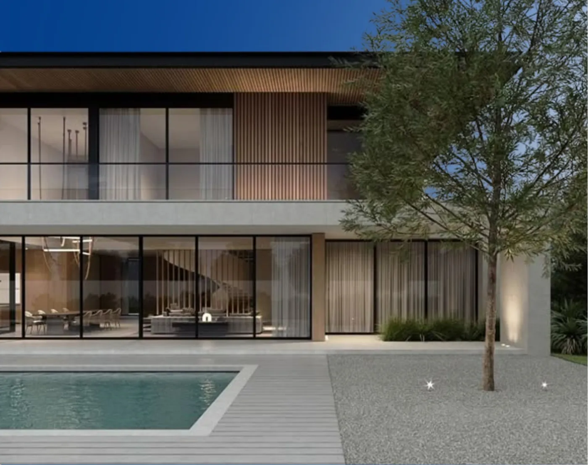
E-Katalog
Aluminium & Shading Systems
KoşulsuzMüşteri Mutluluğu
Unconditional Customer Satisfaction
Aluser Trading, 1994 yılından bu yana Kuzey Kıbrıs’ta alüminyum pencere, kapı ve cephe sistemlerinin üretim ve montajını gerçekleştirmektedir.
Kapı ve pencere sistemleri, alüminyum doğrama, cephe, otomatik tavan, Bioklimatik pergola gibi sistemlerde; mimari projelere uygun, işlevsel ve verimli çözümler sunuyoruz.
Özel üretim ve koşulsuz müşteri memnuniyeti anlayışıyla hizmet vermeye devam ediyoruz.
Aluser Trading has been manufacturing and installing aluminum window, door, and façade systems in Northern Cyprus since 1994.
We provide functional and efficient solutions tailored to architectural projects in areas such as window-door systems, aluminum joinery, façades, automatic roof systems, and bioclimatic pergolas.
We continue to offer custom production with a commitment to unconditional customer satisfaction.
Alüminyum DoğramaÇözümlerimiz
Our Aluminum Frame Solutions
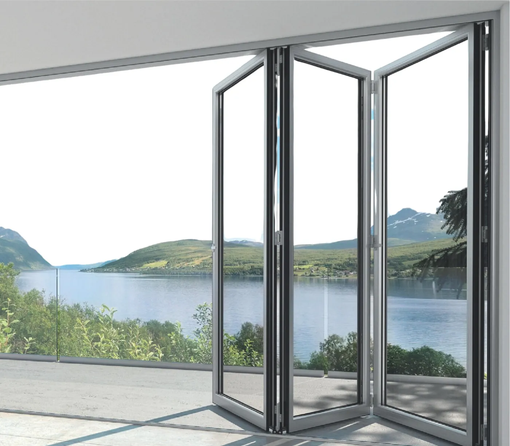
Katlanır CamKapı Sistemleri
Folding Glass Door Systems
Geniş açıklıkları estetik ve kullanışlı hale getirir, balkon ve teraslar için idealdir.
Ideal for balconies and terraces, it transforms wide openings into aesthetic and functional spaces.
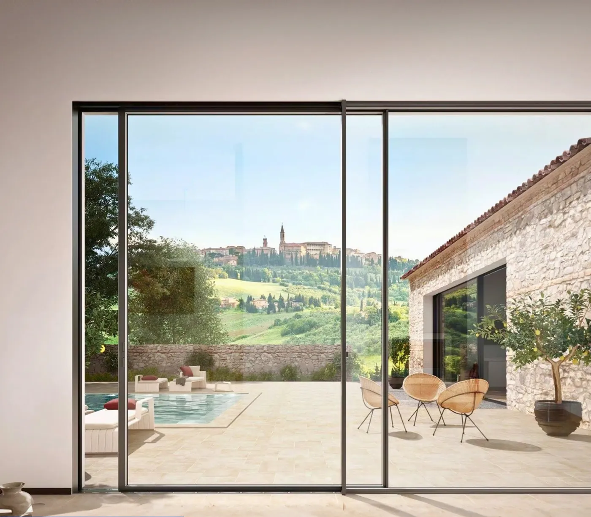
Slimline SürmeCam Sistemleri
Slimline Sliding Glass Systems
Minimum çerçeve ile maksimum görüş alanı sunar, modern ve şık mekanlar yaratır.
Offers maximum visibility with minimal framing, creating modern and elegant spaces.
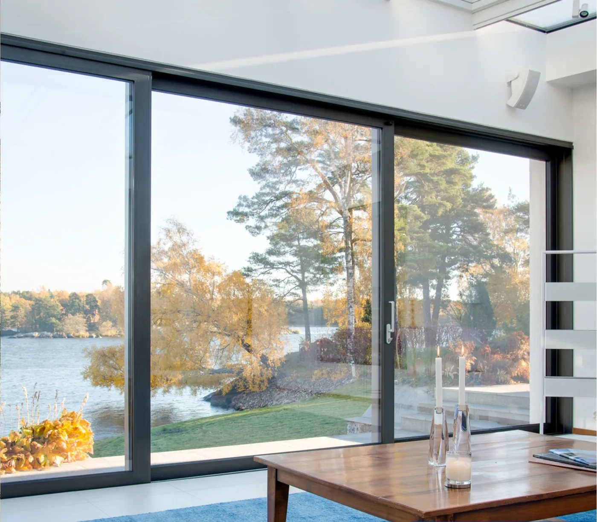
Kaldır SürSistemleri
Hebeschiebe Systems
Geniş açıklıkları kolayca açıp kapatarak alanlara ferahlık ve kullanım rahatlığı sağlar.
Easily opens and closes wide openings, providing spaciousness and ease of use.
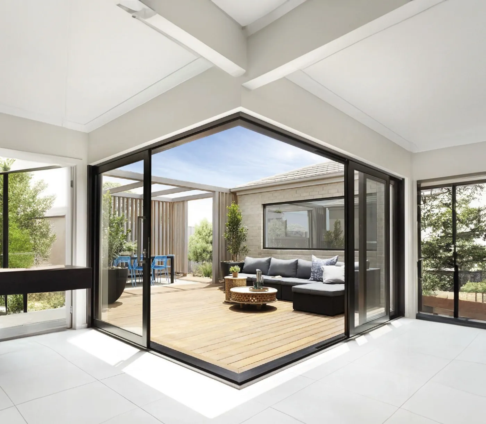
Alüminyum KöşeSürme Kapı Sistemleri
Corner Aluminum Sliding Door Systems
Köşe alanlarda kesintisiz manzara ve geniş açıklıklarla modern, zarif bir görünüm sunar.
Provides a modern, elegant look with uninterrupted views and wide openings in corners.
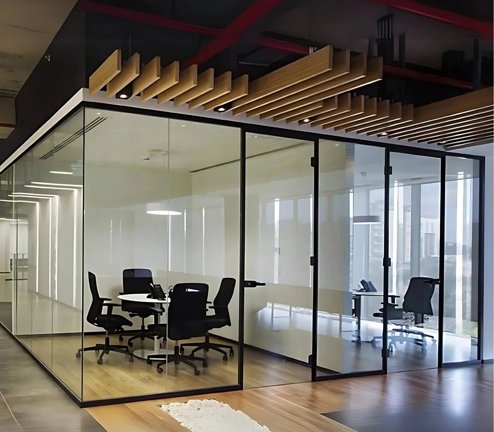
Ofis BölmeSistemleri
Office Partition Systems
Aluser ofis bölme sistemleri, modern çalışma alanlarına şeffaflık ve estetik kazandırır. Alüminyum doğrama ile yüksek dayanıklılık ve fonksiyonellik bir arada sunulur.
Aluser office partition systems add transparency and aesthetics to modern workspaces, combining aluminum joinery with high durability and functionality.
GölgelendirmeÇözümlerimiz
Our Shading Solutions
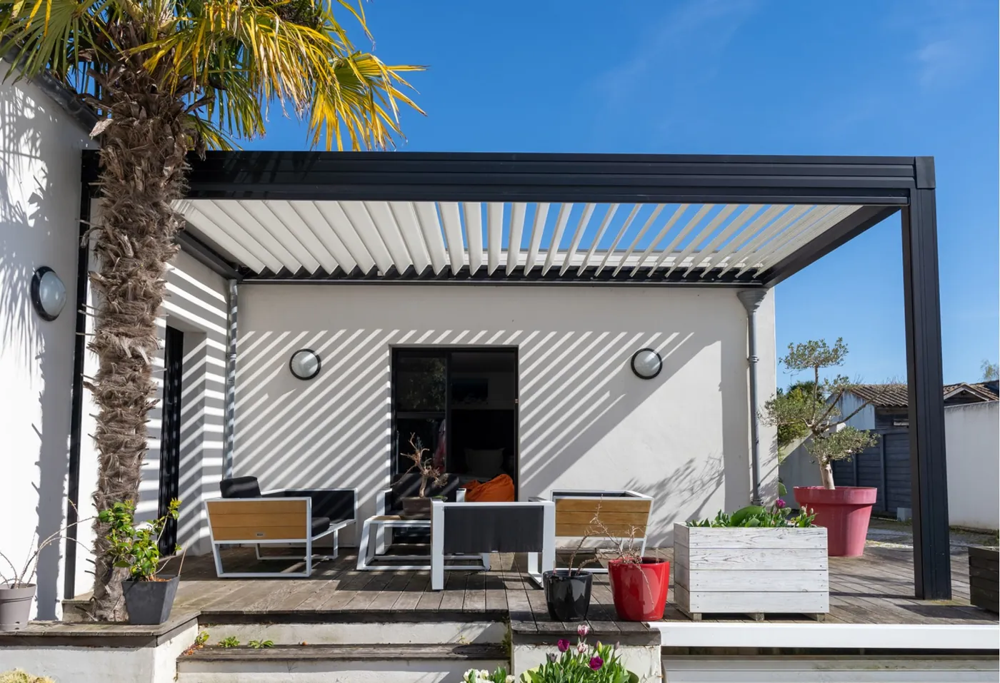
BioklimatikPergola
Bioclimatic Pergola
Bioklimatik pergola, ayarlanabilir lamelleri, entegre aydınlatma ve su tahliye sistemiyle her mevsim konfor sunar. Şıklığı ve dayanıklılığıyla mekanınıza değer katar.
The bioclimatic pergola offers year-round comfort with adjustable louvers, integrated lighting, and drainage. Combining style and durability, it enhances any space.
- Rüzgara DayanıklıWind Resistant
- Deniz Suyuna DirençlidirResistant to Sea Water
- İstenilen Ebatta ÜretimCustomizable Dimensions
- Isı Kontrolü SağlarThermal Control
- 2 Yıl Kalite Garantisi2-Year Quality Guarantee
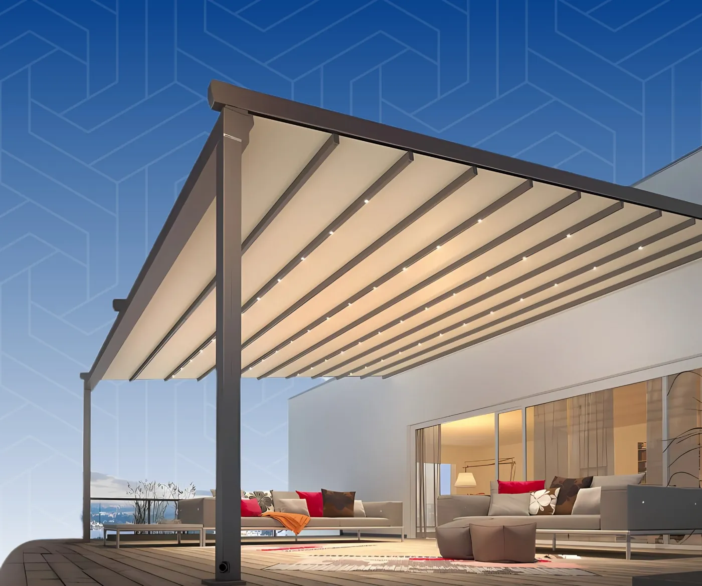
PergolaSistemleri
Pergola Systems
Aluser gölgelendirme sistemleriyle açık alanlarınızda konforu ve şıklığı bir araya getirin. Her mevsime uygun, estetik ve dayanıklı çözümlerle yaşam alanlarınızı yeniden tanımlayın.
Combine comfort and elegance in your outdoor spaces with Aluser shading systems. Redefine your living areas with durable, stylish solutions suitable for every season.
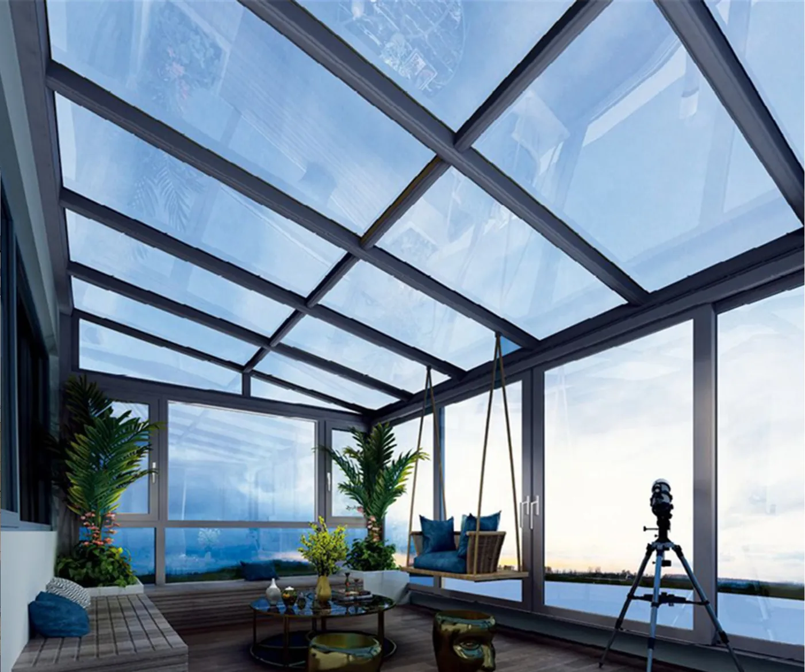
Cam TavanSistemleri
Glass Roof Systems
Doğal ışıkla aydınlanan, ferah ve modern yaşam alanları için Aluser cam tavan çözümleri. Dayanıklı yapısı ve estetik tasarımıyla iç ve dış mekanlara şeffaflık kazandırır.
Aluser glass roof solutions for bright, spacious, and modern living spaces filled with natural light. With its durable structure and elegant design, it brings transparency to both indoor and outdoor areas.
DiğerÇözümlerimiz
Our Other Solutions
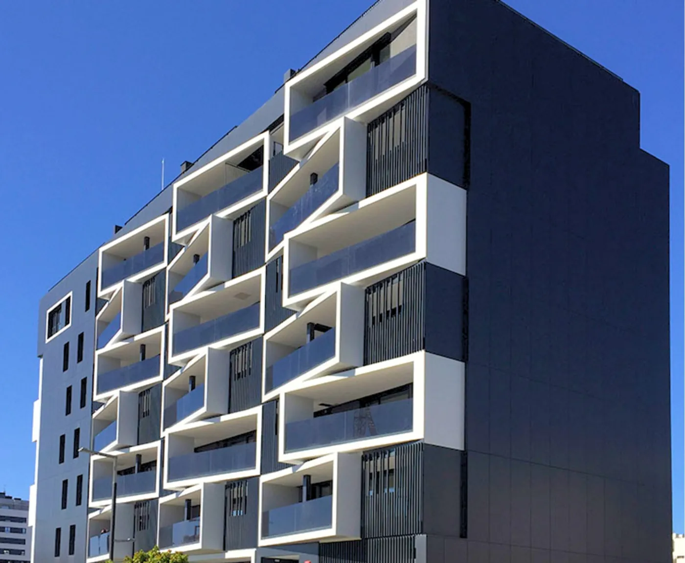
Alüminyum KompozitCephe Çözümleri
Aluminum Composite Façade Solutions
Aluser alüminyum kompozit cephe çözümleriyle binalarınıza estetik bir görünüm ve uzun ömürlü koruma sunar.
Aluser aluminum composite façade solutions provide your buildings with an aesthetic appearance and long-lasting protection.
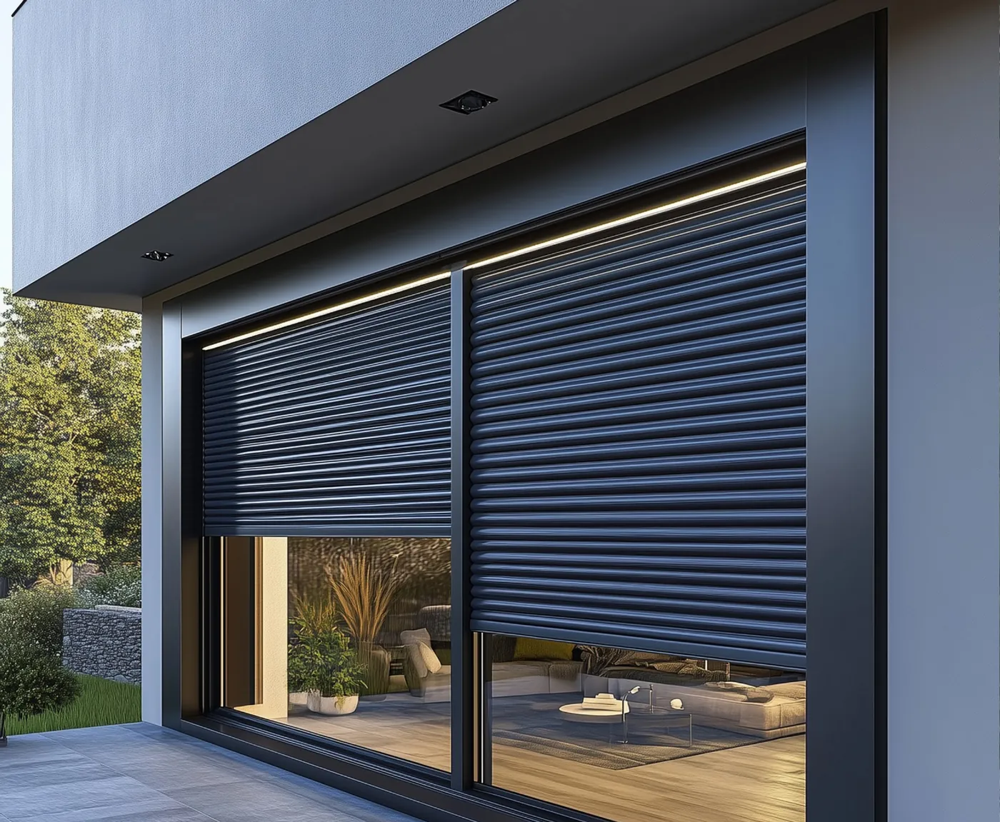
RollingShutter
Rolling Shutter
Aluser Rolling Shutter sistemleri, yaşam alanlarınıza güvenlik, konfor ve enerji verimliliği katar. Modern tasarımıyla mimarinize uyum sağlar, motorlu seçenekleriyle kolay kullanım sunar.
Aluser Rolling Shutter systems add security, comfort, and energy efficiency to your living spaces. With a modern design that complements your architecture and motorized options for easy operation, they offer both style and convenience.
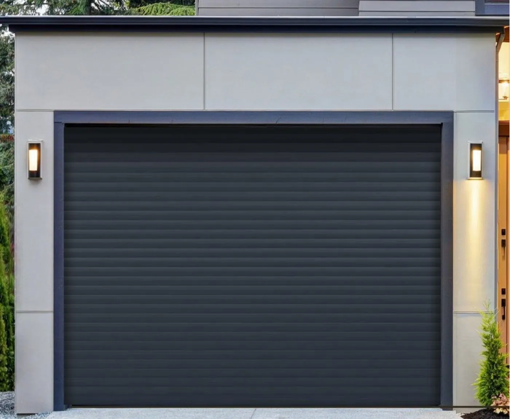
GarajKapıları
Garage Doors
Aluser Garaj Kapıları, hem estetik hem de yüksek güvenlik sunar. Uzaktan kumandalı sistemleriyle konforlu kullanım ve dayanıklı yapı bir arada.
Aluser Garage Doors offer both aesthetics and high security. With remote-controlled systems, they combine convenient use with a durable structure.
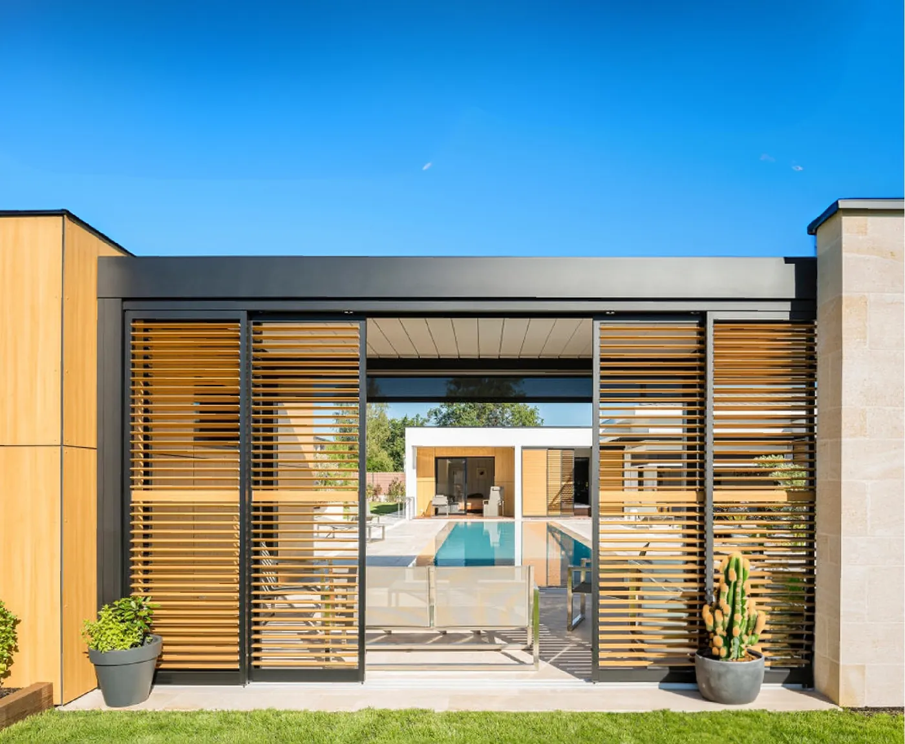
Güneş KırıcıSistemler
Shading Systems
Aluser Alüminyum Güneş Kırıcı Sistemler, cepheye gelen gün ışığını dengeleyerek iç mekânda serin ve ferah bir ortam sağlar. Dayanıklı alüminyum yapısıyla binanıza modern bir görünüm katar.
Aluser Aluminum Shading Systems balance the daylight reaching the façade and keep interiors cool and bright. Their durable aluminum structure gives your building a modern look.
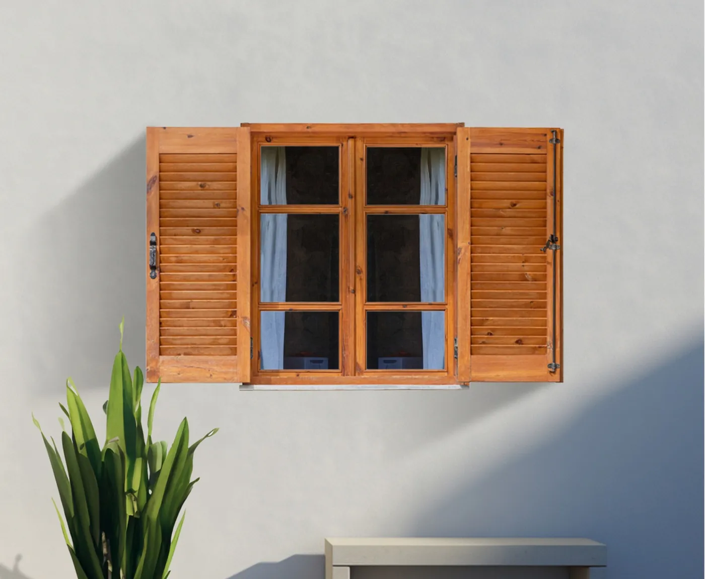
KıbrısPanjuru
Shutter Systems
Aluser Kıbrıs Panjur sistemleri, geleneksel estetiği modern üretimle buluşturur. Ahşap dokusu ve işlevselliğiyle mekanlarınıza sıcaklık ve karakter katar.
Aluser Cyprus Shutter systems blend traditional aesthetics with modern manufacturing. With a wood-like texture and practical functionality, they add warmth and character to your spaces.
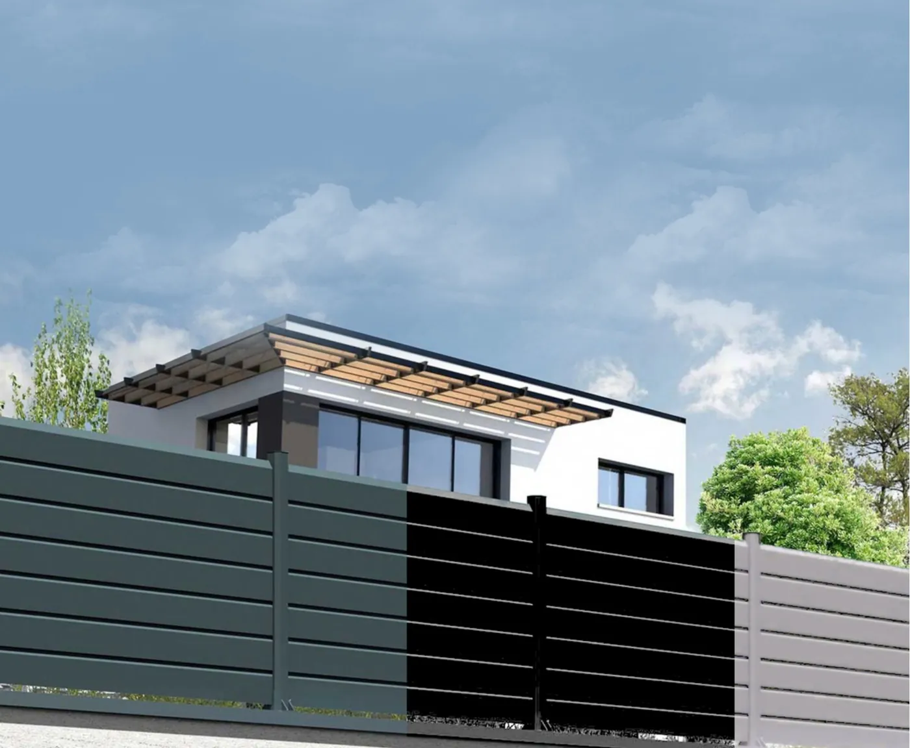
Alüminyum ÇitSistemleri
Aluminum Fencing Systems
Aluser alüminyum çit sistemleriyle mahremiyetinizi koruyun, dış mekanlarınıza modern bir görünüm kazandırın.
Maintain your privacy and give your outdoor spaces a modern look with Aluser aluminum fence systems.
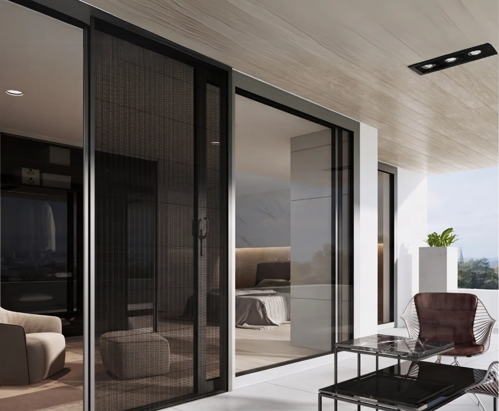
Kedi DostuSineklik Sistemleri
Pet-Friendly Mosquito Net
Aluser sineklik sistemleriyle ferahlığı korurken böcekleri yaşam alanınızdan uzak tutun. Sürme, menteşeli ve pliseli modellerle pencere ve kapılarınıza tam uyum sağlayan pratik çözümler sunuyoruz.
Keep insects out while maintaining fresh air with Aluser insect screen systems. Practical sliding, hinged, and pleated models fit perfectly on windows and doors.
- Tırmalamalara Dayanıklı
- Kedi ve Küçük Irk Köpekler İçin Ekstra Güvenlik Sağlar
- Görüşü Engellemez, Hava Sirkülasyonunu Korur
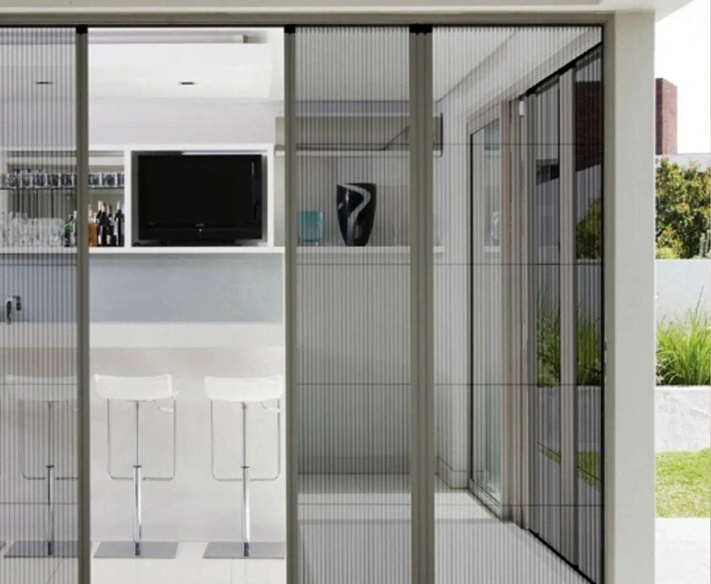
SineklikSistemleri
Mosquito Net Systems
Yaz aylarında evinizi serinletirken sinek ve haşerelerden korunmanın en pratik yolu: standart sineklik sistemleri.
The most practical way to keep your home cool in the summer while protecting it from insects and pests: standard insect screen systems.
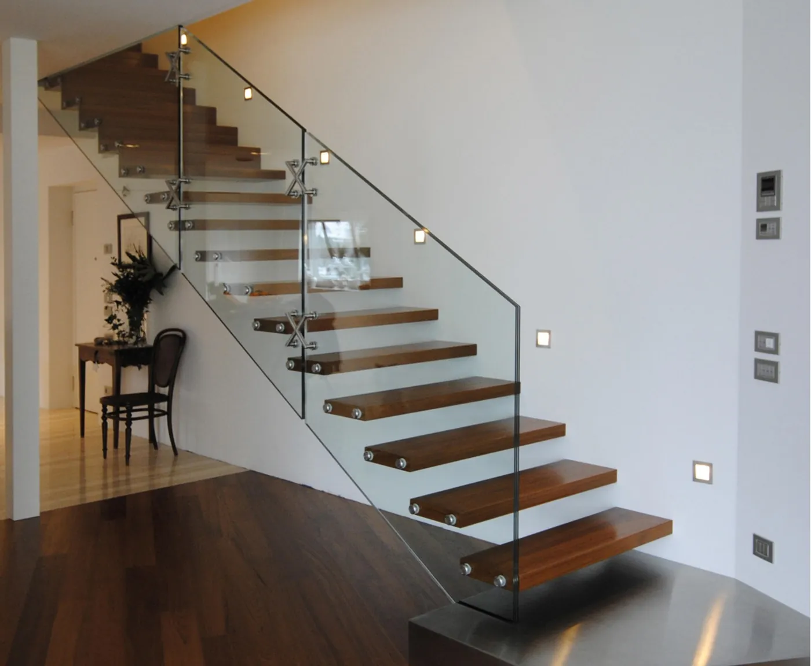
AlüminyumKüpeşte Sistemleri
Aluminum Railing Systems
Alüminyum küpeşte sistemleri, balkon, merdiven ve teraslarda güvenli, şık ve paslanmaz çözümler sunar. Hafif, dayanıklı ve bakım gerektirmez.
Aluminum railing systems offer safe, stylish, and rust-resistant solutions for balconies, stairs, and terraces. Lightweight, durable, and maintenance-free.
Bize Ulaşın
- +90 539 108 45 45
- +90 392 444 62 62
- www.alusertrading.com
- Alayköy Sanayi Bölgesi, Lefkoşa / KKTC
Basılı katalog
Kataloğun basılı halini sayfa sayfa çevirerek de inceleyebilirsiniz.
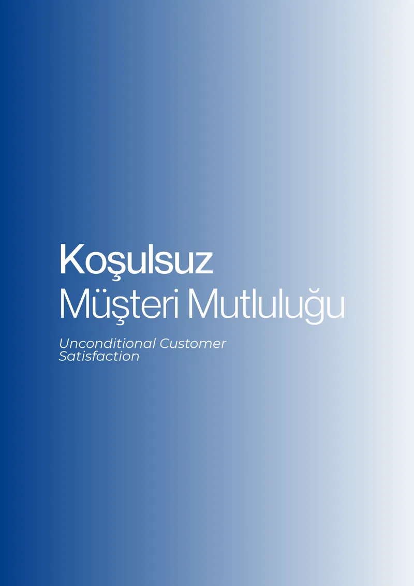
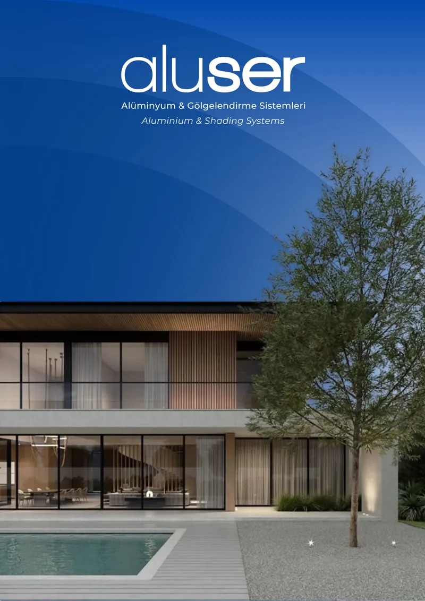
Sayfayı çevirmek için sürükleyin, oklara ya da sayfaya tıklayın.
Katalogda neler var?
Alüminyum doğrama çözümleri
- Alüminyum katlanır cam kapı sistemleri
- Alüminyum slimline sürme cam sistemleri
- Alüminyum kaldır-sür sistemleri
- Alüminyum köşe sürme kapı sistemleri
- Alüminyum ofis bölme sistemleri
Sitedeki ürün sayfaları: Alüminyum kapı, Alüminyum pencere, Alüminyum ofis bölmeleri
Gölgelendirme çözümleri
Sitedeki ürün sayfaları: Alüminyum pergola, Alüminyum kış bahçesi
Diğer çözümler
- Alüminyum kompozit cephe çözümleri
- Alüminyum rolling shutter
- Alüminyum garaj kapıları
- Alüminyum güneş kırıcı sistemler
- Alüminyum Kıbrıs panjuru
- Alüminyum çit sistemleri
- Kedi dostu alüminyum sineklik
- Alüminyum sineklik sistemleri
- Alüminyum küpeşte sistemleri
Sitedeki ürün sayfaları: Alüminyum cephe giydirme, Alüminyum sineklik, Alüminyum cam küpeşte